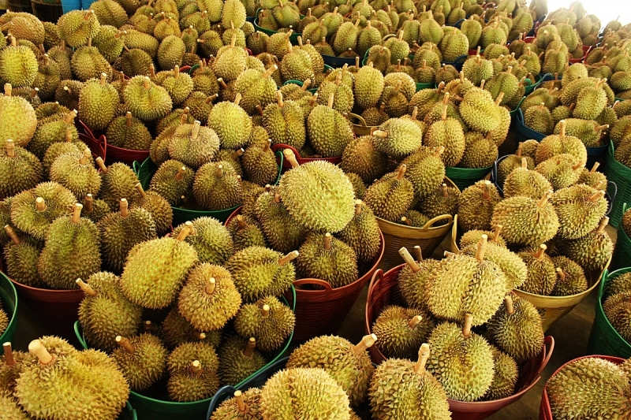

<!--breadcrumb -->
<section id="breadcrumb">
  <div class="container">
      <div class="row">
          <div class="btn-group btn-breadcrumb">
              <a href="index.html" class="btn btn-default">หน้าแรก</a>
              <a href="souvenirs.html" class="btn btn-default">ของฝาก</a>
              <a href="#souvenirs02" class="btn btn-default"><div class="active">ทุเรียน</div></a>
          </div>
      </div>
	</div>
</section>

<section id="souvenirs02">
  <div class="container">
    <div class="row">
      <div class="col-md-12 col-xs-12 col-sm-12 col-lg-12 img">
        <h4>ทุเรียน</h4>
        <hr>
        
        <p></p>
        <p></p>
      </div>
    </div>
  </div>
</section>
